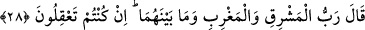
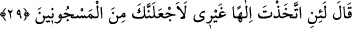

28. Musa devamla şunu söyledi: “Şâyet aklınızı kullansanız (anlarsınız ki), O,
doğunun, batının ve ikisinin arasında bulunanların Rabbidir.”
“Mûsâ” onun küstahlığına cevap vermekle meşgul olmadı. Cenâb-ı Hakk’ı daha fazla
târif etmek için “devamla şunu söyledi: “Şâyet aklınızı kullansanız” eşyadan bir
varlığı düşünseniz veya aklı ve temyizi olan kimselerden olsanız durumun benim
dediğim gibi olduğunu bilirdiniz ve eserden müessire istidlâl ederdiniz.
Bu ifâdede onların akıl dâiresinden uzak bulunduklarına ve Mûsâ (a.s.)’a isnad
ettikleri delilikle muttasıf olduklarına işâret vardır. Mûsâ (a.s.) ve Fir’avn’un, kezâ kalb
ve nefsin birbirinin zıtlıklarının kemâlinden her biri diğerinden sâdır olanı delilik
saymıştır. Âşık ile zâhidi de bunlara kıyas et. Çünkü aşk deliliği bir vâdî’de, zühd
deliliği başka bir vâdîdedir.
Ham bir şeyh, sana olan aşkım dolayısıyla beni kınadı
Dîvâne olanın çocukların siteminden ne korkusu olacak?!
“(Anlarsınız ki) O, doğunun, batının ve ikisinin arasında bulunanların Rabbidir.”
Allah’ın göklerin, yerin ve onların arasındakilerin rabbi olduğunun açıklanması, gerçi
O’nun doğunun, batının ve ikisinin arasında bulunanların rabbi olduğunun beyanını da
içerir. Ancak doğu, batı ve ikisi arasındakilerin zikredilmesi, âlemde bir defa aydınlık,
bir defa karanlık olması gibi meydana gelen değişikliklerin her şeyi bilen ve sonsuz
hikmet sâhibi bir yaratana muhtaç olduğunu ortaya koymak içindir.
İbn Atâ der ki: “Allah Teâlâ dostlarının kalblerini îmanla nurlandırır ve zâhirlerini
onunla aydınlatır. Düşmanlarının kalblerini küfürle karartır, zulmetin eserlerini onların
cesedleri üzerinde ızhâr eder.
29. Fir’avn: “Benden başkasını ilah edinirsen, andolsun ki seni zindanlıklardan
ederim!” dedi.
“Fir’avn”, aşırı azgınlığından, zorbaların yaptığı gibi cezâlandırmaya meylederek,
delil ile susturulan inatçıların âdeti olduğu üzere dâvasında yenik düştükten sonra
münâkaşa ve münâzarayı bırakıp tehdîde yönelerek ve rubûbiyyetin kendisinden
başkasına nisbet edilmesine öfkesinden: “Benden başkasını ilah edinirsen, andolsun ki
seni zindanlıklardan ederim!” Yani, seni zindanlarımda halleri bilinen kimselerden